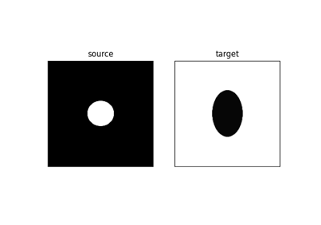
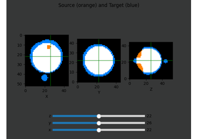
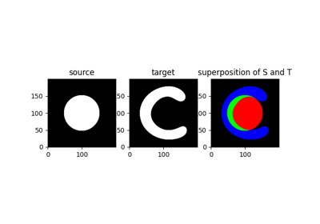
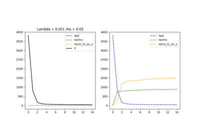
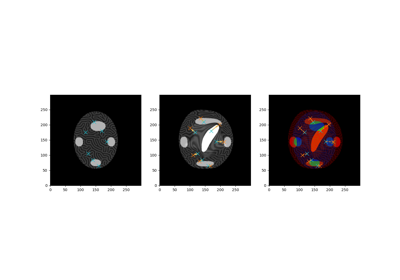
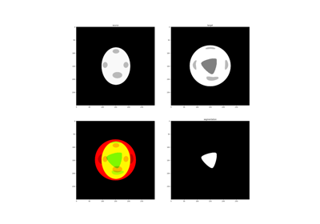

Registration examples
The examples below shows how to make various registrations tasks with Demeter-Metamorphosis.

Data cost variation example: Mutual Information
Data cost variation example: Mutual Information

Metamorphosis on 3D images

sphx_glr_auto_examples_1_registration_semiLagrangian_scheme.py
Why we should use semi-Lagrangian scheme?

MetaMorphosis behaviour with different values of rho
MetaMorphosis behaviour with different values of rho

Constrained Metamorphosis - simulated cancer growth
Constrained Metamorphosis - simulated cancer growth

Weighted metamorphosis - simulated cancer growth
Weighted metamorphosis - simulated cancer growth